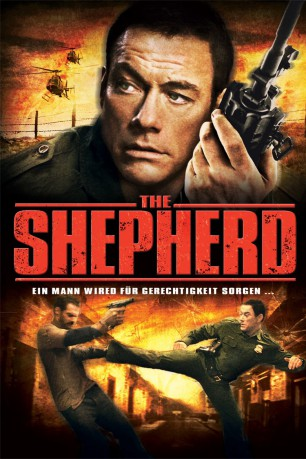
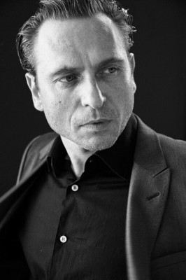
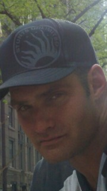
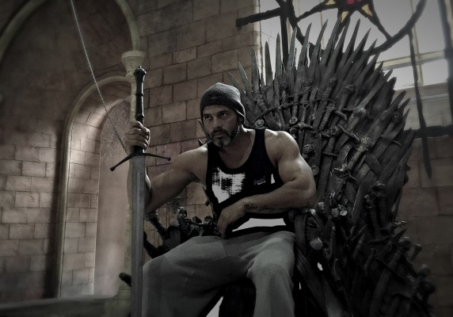

#9375 The Shepherd
 gesehen am 06.09.2018
gesehen am 06.09.2018
 
 IMDB-Wertung: 5.7 / 10
IMDB-Wertung: 5.7 / 10  Metascore: 0
Metascore: 0 
An der mexikanisch-amerikanischen Grenze operiert seit neuestem eine von ehemaligen amerikanischen Spezialeinsatzkräften verstärktes Syndikat. Um die Chancen der überforderten Grenzer zu erhöhen, entsendet man zur Verstärkung den Louisiana-Cop Robideaux, einen vormaligen Kameraden der verdächtigen Herrschaften. Nachdem sich Robideaux mit den örtlichen Gegebenheiten vertraut gemacht hat, sucht er den Infight mit den Drogengangstern und wird dabei auch von privaten Rachemotiven geleitet.
Jahr: 2008
Dauer: 94 Minuten
FSK: 18
Land: USA Studio: Sony Pictures Home EntertainmentTonspuren:
Untertitel: Deutsch, Englisch,
Auflösung: 1080p (1920x1080) Größe: 6604 MB
Genre: Action, Thriller, Krimi
Regisseur: Isaac Florentine
Drehbuch: Joe Gayton
Soundtrack: Mark Sayfritz
Darsteller:
 Jean-Claude Van Damme als Jack Robideaux
Jean-Claude Van Damme als Jack Robideaux-  Stephen Lord als Benjamin Meyers
- Gary McDonald als Billy Pawnell
 Scott Adkins als Karp
Scott Adkins als Karp- Andrée Bernard als Lexxi
- Miles Anderson als Arthur Pennigton
- Todd Jensen als Wray
 Phil McKee als Jed
Phil McKee als Jed- Dian Hristov als Stanton
 Atanas Srebrev als Deshaun
Atanas Srebrev als Deshaun Bashar Rahal als Soldier
Bashar Rahal als Soldier- Teodora Duhovnikova als Anna-Lucia Ashley
 Velizar Peev als Leech
Velizar Peev als Leech-  J.J. Perry als Illegal Immigrant
- Kaloian Vodenicharov als Jamul Al Din
- Bianca Brigitte VanDamme als Kassie Robideaux
- Shero Rauf als Guard for the Chief of Federales
 Borislav Iliev als Bar Thug #2 (uncredited)
Borislav Iliev als Bar Thug #2 (uncredited) Danko Jordanov als Bar Thug #1 (uncredited)
Danko Jordanov als Bar Thug #1 (uncredited)- Natalie J. Robb als Capt. Ramona Garcia
- Daniel Perrone als Felix Nestor
- Dan Davies als Emile
- Luis Algar als Benito Ortiz
- Ivaylo Geraskov als Gallery
- Velislav Pavlov als The Contact
- Bogdan Plakov als Turgell
- Joel Morales als Gangster #1
- Radoslav Ignatov als Gangster #2 / Deep Voice
- Sava Dragunchev als Flaco
- Fidana Dimitrova als Oslem
- Hristo Mitzkov als Bomb Squad Leader
- Georgi Ivanov als Border Patrol Agent
- Juliana Doncheva als Eva Pawnell
- Michael McCoy als Flanigan
- Dimiter Doichinov als Claude
- Krassimir Gospodinov als Chief of Federales
- Mike Straub als Police Officer
- Mimoza Bazova als Nun
- Eleonora Mancheva als Nestor's Girl
- Vladimir Bonev als Old Man
- George Zlatarev als Priest
- Salahadine H. Beztout als Mexican Federal Agent
- Sean Johnson als Funeral Guard #1
- Rolando Cadenas als Funeral Guard #2
- Brandon Brandt als Funeral Guard #3
- Alex Brown als Funeral Guard #4
- Kathy Brayton als Civilist in the U.S. Border Patrol Agency
- Siso Kamburov als Teacher
-  Radoslav Parvanov als Mexican Prison Fighter (uncredited)
Datei: X:\FSK18-2000-2009\Shepherd, The (2008, FSK18, 1920x1080).mkv seit 17.08.2018
Festplatte: FSK18
 Es gibt insgesamt 106 Filme in der Gruppe 'FSK18-2000-2009'
Es gibt insgesamt 106 Filme in der Gruppe 'FSK18-2000-2009'